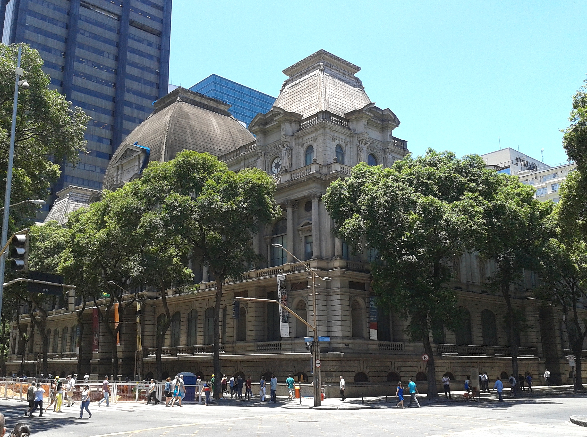
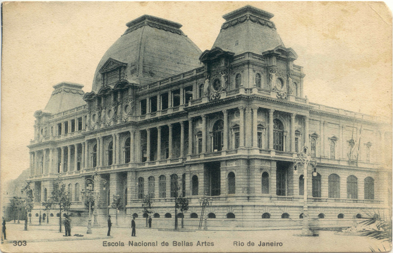
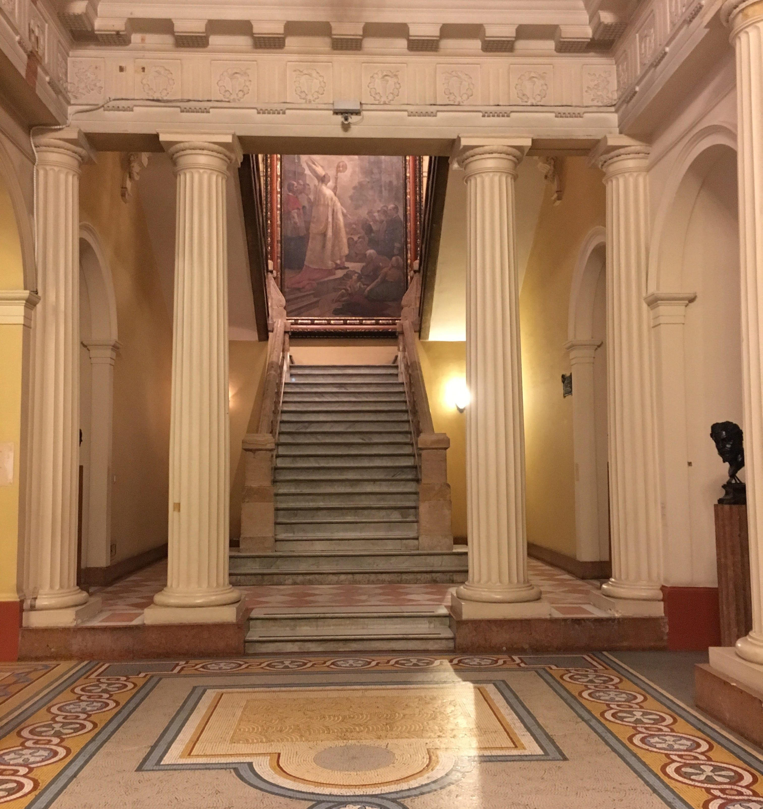
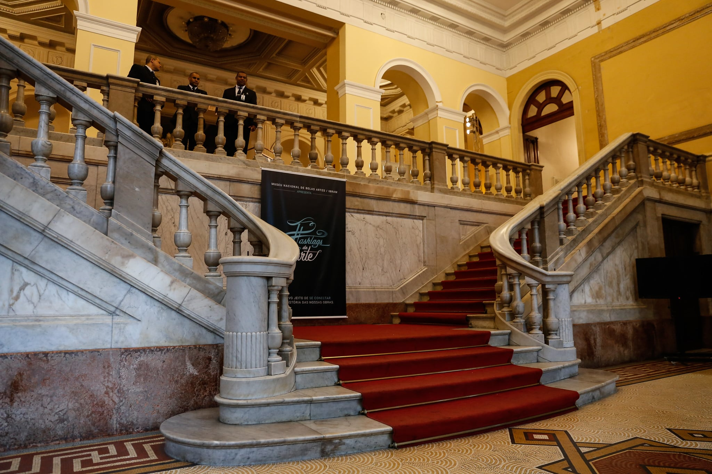

O Museu Nacional de Belas Artes
O Museu Nacional de Belas Artes (MNBA) do Rio de Janeiro é uma instituição cultural importante, abrigando uma vasta coleção de arte brasileira e internacional. Atualmente, o museu continua a desempenhar um papel fundamental na preservação, exibição e pesquisa de obras de arte, contribuindo para a difusão da cultura e da história da arte no Brasil. O MNBA está localizado no centro histórico do Rio de Janeiro e ocupa um prédio de arquitetura imponente, construído no século XIX. O museu conta com uma variedade de galerias e salas de exposição, onde são exibidas pinturas, esculturas, desenhos e gravuras de artistas brasileiros e estrangeiros. A coleção permanente do MNBA apresenta um panorama abrangente da produção artística brasileira ao longo dos séculos, desde o período colonial até os dias atuais. Destacam-se obras de renomados artistas como Portinari, Di Cavalcanti, Eliseu Visconti, Victor Meirelles, entre outros. Além disso, o museu também abriga uma importante coleção de arte europeia, incluindo obras de mestres como Rembrandt, Monet, Rodin e Picasso. Além das exposições permanentes, o MNBA promove mostras temporárias, oferecendo ao público a oportunidade de conhecer diferentes estilos, movimentos e períodos da arte. Essas exposições temporárias abrangem tanto a arte brasileira quanto a internacional, contribuindo para uma programação dinâmica e diversificada. O museu também se dedica à pesquisa e à preservação das obras de arte. Possui um centro de documentação que abriga um acervo bibliográfico especializado e uma coleção de arquivos, fotografias e documentos relacionados à arte brasileira.
A Escola Nacional de Belas Artes
A Escola Nacional de Belas Artes (ENBA) desempenhou um papel fundamental na história da arte e da educação artística no Brasil. Fundada em 1826, no Rio de Janeiro, a ENBA foi uma das primeiras instituições dedicadas ao ensino das artes visuais no país, influenciando gerações de artistas e contribuindo para o desenvolvimento das artes plásticas brasileiras. A ENBA teve origem como uma escola de arte vinculada à Academia Imperial de Belas Artes, criada por decreto do imperador Dom João VI. Inicialmente, a academia tinha um enfoque mais voltado para a formação de artistas e artesãos para atender às demandas do governo imperial. Com o passar dos anos, a instituição foi se transformando em um centro de ensino de artes mais abrangente, abrindo espaço para a experimentação e o desenvolvimento artístico.  A escola teve um papel importante na formação de artistas brasileiros durante o século XIX e o início do século XX. A ENBA atraiu estudantes de diferentes regiões do Brasil, proporcionando-lhes uma educação artística de alta qualidade e estimulando a troca de ideias e influências entre os jovens talentos. Através de seus cursos e programas de ensino, a escola ajudou a estabelecer um cânone artístico nacional, promovendo o desenvolvimento de uma identidade artística brasileira. A ENBA também teve professores renomados que exerceram grande influência sobre a cena artística brasileira. Nomes como Victor Meirelles, Eliseu Visconti, Rodolfo Amoedo e Zeferino da Costa, entre outros, foram responsáveis por transmitir conhecimentos técnicos e estéticos aos estudantes, além de incentivá-los a explorar novas abordagens artísticas. Esses mestres da ENBA deixaram um legado duradouro na história da arte brasileira. Além do ensino artístico, a ENBA desempenhou um papel relevante na organização de exposições e mostras de arte. A escola foi responsável por promover eventos que divulgaram as produções dos alunos e professores, bem como trazer exposições de artistas estrangeiros, contribuindo para a disseminação da arte e o intercâmbio cultural. Com o passar dos anos, a ENBA passou por transformações e adaptações às mudanças no panorama artístico e educacional do Brasil. Em 1931, foi incorporada à recém-criada Universidade do Brasil, atual Universidade Federal do Rio de Janeiro (UFRJ). Essa integração fortaleceu a ENBA como uma instituição acadêmica de renome, permitindo uma maior diversificação de cursos e a incorporação de novas tendências artísticas. A ENBA continuou a formar gerações de artistas e a contribuir para o cenário artístico nacional. No entanto, em 1975, a escola foi desativada como unidade acadêmica, encerrando uma era importante na história da arte brasileira. Atualmente, a UFRJ abriga a Escola de Belas Artes, que carrega o legado da ENBA e mantém viva a tradição de ensino e pesquisa nas artes visuais.
A arquitetura do MNBA
O autor do projeto foi o arquiteto espanhol Adolfo Morales de los Rios, que tomou, como modelo, o Museu do Louvre, em Paris. Durante a construção, porém, o desenho seria alterado, possivelmente por Rodolfo Bernardelli, então diretor da escola. Mais tarde, Archimedes Memoria acrescentou outras mudanças. O resultado é uma construção eclética, com fachadas em diferentes estilos. A fachada principal na Avenida Rio Branco é inspirada na renascença francesa, com frontões, colunatas e relevos em terracota representando as grandes civilizações da Antiguidade, além de medalhões pintados por Henrique Bernardelli com retratos dos integrantes da Missão Francesa e outros artistas brasileiros. As laterais são mais simples, e fazem referência à Renascença italiana; possuem mosaicos parisienses com figuras de arquitetos, pintores e teóricos da arte, como Vasari, Vitrúvio e Da Vinci. A fachada posterior é um exemplo mais puro e austero do neoclassicismo, com relevos ornamentais de Edward Cadwell Spruce. Na decoração interna, foram usados materiais nobres como mármores e mosaicos, estuques, cristais, cerâmicas francesas e estatuária. O edifício foi tombado pelo Instituto do Patrimônio Histórico e Artístico Nacional em 24 de maio de 1973.  O Museu Nacional de Belas Artes (MNBA) é conhecido como um tesouro cultural, abrigando uma vasta coleção de obras de arte. No entanto, além de admirar as exposições e apreciar a arte, uma visita ao MNBA oferece uma oportunidade única de explorar a arquitetura fascinante do prédio. Ao conhecer tanto o interior quanto o exterior do museu, mergulhamos em uma jornada pela história da arquitetura, descobrindo os detalhes e características que tornam o MNBA uma visita imperdível. Uma obra-prima arquitetônica: Ao chegar ao MNBA, é impossível não se encantar com a imponente estrutura do prédio. Construído no estilo eclético, o museu combina elementos neoclássicos e renascentistas, criando uma fachada majestosa e grandiosa. O cuidado nos detalhes arquitetônicos revela a dedicação dos construtores em criar um espaço que fosse, em si mesmo, uma obra de arte. Explorando o interior: Adentrar o MNBA é como atravessar um portal para o passado. Os corredores espaçosos, as escadarias ornamentadas e as salas ricamente decoradas nos transportam para uma época em que a grandiosidade arquitetônica era uma expressão de poder e prestígio. A mistura de estilos arquitetônicos em diferentes salas nos lembra da evolução das tendências ao longo dos anos.  A história nas paredes: Cada parte do MNBA conta uma história. Os afrescos nos tetos, os vitrais coloridos e os detalhes esculpidos nas colunas são testemunhos silenciosos da passagem do tempo e das mudanças culturais. Ao caminhar pelos corredores, somos envoltos pela atmosfera histórica do lugar, sentindo a presença dos artistas e arquitetos que contribuíram para a construção do museu. A fusão entre arte e arquitetura: Ao visitar o MNBA, temos a oportunidade de testemunhar a harmonia entre a arte exposta e o espaço que a abriga. As galerias foram projetadas para proporcionar uma experiência única, com iluminação cuidadosamente planejada e disposição das obras de arte. A integração entre arquitetura e arte cria um ambiente que eleva a experiência estética como um todo. Visitar o Museu Nacional de Belas Artes não se trata apenas de apreciar a riqueza das exposições, mas também de mergulhar na história da arquitetura. Ao explorar o prédio, tanto interna quanto externamente, somos levados a uma jornada pela evolução dos estilos arquitetônicos e pela influência da arte na concepção dos espaços. A experiência de conhecer o MNBA internamente e externamente proporciona uma imersão completa na cultura, história da arte e patrimônio arquitetônico do Brasil. A arquitetura do MNBA não é apenas um pano de fundo para as obras de arte, mas um elemento que enriquece a visita, oferecendo uma compreensão mais profunda da história da arte e da cultura. Conhecer tanto o interior quanto o exterior do museu é uma oportunidade única de explorar a evolução da arquitetura e apreciar o esplendor do edifício em si.